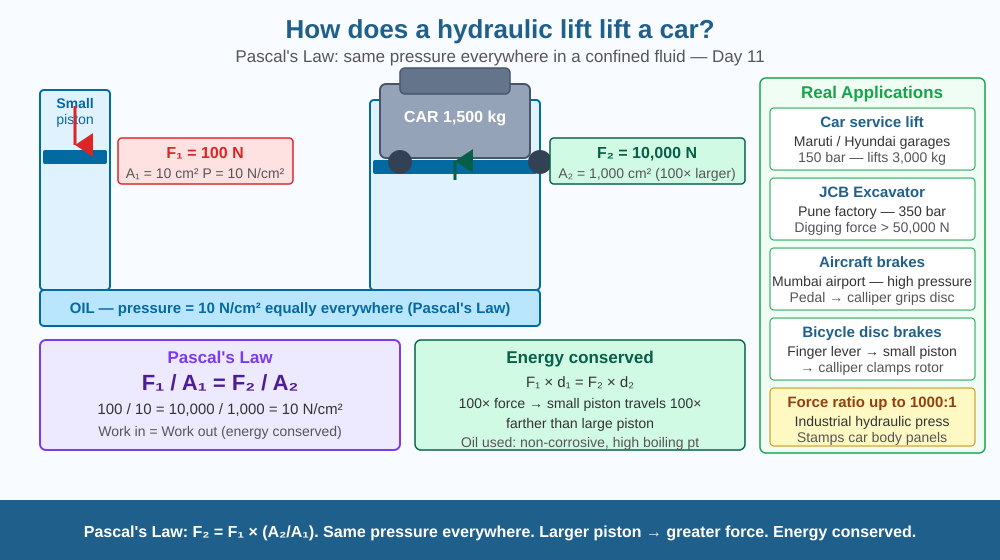

Discover how a small force on a tiny piston can lift an entire car — and understand the one principle that makes hydraulic brakes, JCB excavators, and aircraft landing gear all work.
A mechanic at a garage pushes a small lever with one hand and a 1,500 kg car rises smoothly into the air. A JCB excavator bucket digs into hard rock with enormous force — all controlled by a driver pressing small pedals. A dentist's chair adjusts effortlessly under a patient weighing 80 kg. In every case, a small input force creates a vastly larger output force. How does fluid trapped inside pipes multiply force?
Pascal's Law:
When pressure is applied to a confined fluid, it is transmitted equally and undiminished in all directions. This is the foundation of all hydraulic systems.
Pressure is defined as: P = F / A (Force ÷ Area), measured in Pascals (Pa = N/m²).
How the hydraulic lift works:
A small piston (area A₁) and a large piston (area A₂) are connected by an enclosed oil-filled pipe.
When you push down on the small piston with force F₁: - Pressure created: P = F₁ / A₁ - This pressure is transmitted equally throughout the fluid - The same pressure acts on the large piston: P = F₂ / A₂ - Therefore: F₁/A₁ = F₂/A₂, which gives F₂ = F₁ × (A₂/A₁)
The key equation:
F₁ × A₂ = F₂ × A₁ → the force is amplified by the ratio of piston areas.
Example: A₁ = 10 cm², A₂ = 1,000 cm² (ratio = 100), input force F₁ = 100 N → output force F₂ = 10,000 N = enough to lift ~1,000 kg.
Energy is conserved:
The lift is not free. By the work-energy principle: Work in = Work out (ignoring friction).
F₁ × d₁ = F₂ × d₂
If force is multiplied by 100, distance is divided by 100. The small piston travels 100 cm for the large piston to rise 1 cm.
Why oil, not water?
Hydraulic systems use oil because oil does not corrode metal, does not boil easily, lubricates the pistons, and has consistent viscosity.
Think of pressure like a rumour spreading through a crowd. Whisper a secret to one person in a small room — it spreads equally to everyone, no stronger or weaker per person. Hydraulic pressure is the same: apply pressure at one point and every square centimetre of the fluid receives exactly that pressure. The large piston has more square centimetres exposed, so it receives more total force — even though each cm² gets the same pressure.

The diagram shows a cross-section of a hydraulic lift: a narrow input cylinder connected by a pipe to a wide output cylinder. The small piston is pushed down with a small force arrow; the large piston lifts a car with a large force arrow. Pressure arrows show equal pressure throughout the fluid. The equation F₁/A₁ = F₂/A₂ appears with numbers. A sidebar shows real applications: car lift, JCB arm, aircraft landing gear, bicycle brakes.
Take two syringes of different sizes (5 mL and 20 mL). Connect their nozzles with a short rubber tube filled with water (no air bubbles). Push the small syringe plunger — the large syringe plunger moves with much less force required at the large end, but also moves less distance. Calculate the area ratio (roughly proportional to the square of the barrel diameter ratio) and verify that the output force is amplified approximately by this ratio.
A hydraulic system seems to produce more force than you put in. Does this violate Newton's laws? No — because force and displacement are inversely related. Work = Force × Distance. The work you do on the small piston equals the work done by the large piston (minus friction losses). Hydraulics are a mechanical advantage system, like a lever, not a free energy machine. What does this imply about the speed at which the large piston rises compared to the speed at which the small piston is pushed?
What scientific principle makes a hydraulic lift able to lift a heavy car?
Why is understanding Pascal's law more useful than just knowing hydraulics work?
If the output piston area of a hydraulic lift were doubled, what would you predict?
A hydraulic press has an input piston of area 5 cm² and an output piston of area 500 cm². (a) What pressure is created when an input force of 200 N is applied? (b) What output force does the press exert? (c) If the input piston moves 40 cm, how far does the output piston move? (d) Verify that work in equals work out (ignoring friction). (Hint: convert cm² to m²: 1 cm² = 10⁻⁴ m².)
The word "hydraulic" comes from the Greek hydraulis — a water organ invented in the 3rd century BCE by Ctesibius of Alexandria. He used water pressure to drive air through organ pipes. Blaise Pascal formalised the pressure law in 1648. Joseph Bramah used it in 1795 to build the first hydraulic press. Today, the same principle — unchanged since Pascal — allows the Chandrayaan-3 rover to adjust its wheels on the lunar surface and lets a Maruti mechanic in Nagpur lift a car with one hand.
Pascal's Law: pressure applied to a confined fluid transmits equally in all directions. F₂ = F₁ × (A₂/A₁). Larger piston area → greater force. Energy is conserved — larger force means smaller distance moved.